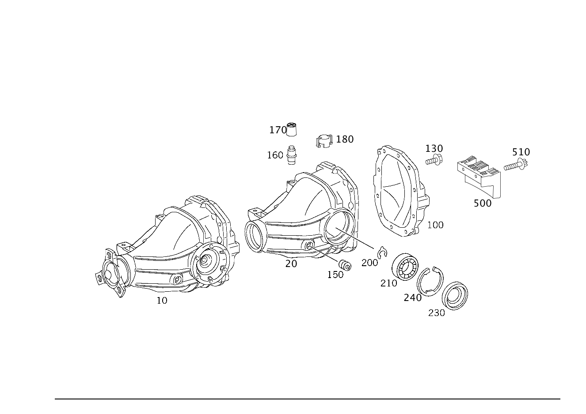

| № | Артикул | Название | Кол. | Примечание |
|---|---|---|---|---|
| 10 | A 203 350 88 62 | Картер моста (AXLE HOUSING) | 1 | Центральный элемент заднего моста (редуктор) без фланца; 1:2.47 |
| 10 | A 203 350 98 14 | Редуктор заднего моста | 1 | Центральный элемент заднего моста (редуктор) без фланца; 1:2.65 |
| 10 | A 203 350 89 62 | Картер моста | 1 | Центральный элемент заднего моста (редуктор) без фланца; 1:2.65 |
| 20 | A 220 351 04 05 | - Корпус (HOUSING) | 1 | |
| 100 | A 210 351 30 08 | - Крышка (CAP) | 1 | Крышка |
| 100 | A 210 351 30 08 | - Крышка (CAP) | 1 | Крышка |
| 130 | N 910105 010009 | - Винт с 6-гранной головкой (HEXAGON HEAD BOLT) | 10 | Крышка к корпусу; M10X25 |
| 130 | N 910105 010009 | - Винт с 6-гранной головкой (HEXAGON HEAD BOLT) | 10 | Крышка к корпусу; M10X25 |
| 150 | A 000 997 62 32 | - Резьбовая пробка (SCREW PLUG) | 2 | Картер заднего моста; M 24X1.5 |
| 150 | A 000 997 62 32 | - Резьбовая пробка (SCREW PLUG) | 2 | Картер заднего моста; M 24X1.5 |
| 160 | A 230 350 05 90 | - Воздушный клапан | 1 | |
| 160 | A 166 351 01 65 | - Воздушный патрубок (VENT FITTING) | 1 | |
| 160 | A 230 350 05 90 | - Воздушный клапан | 1 | |
| 160 | A 166 351 01 65 | - Воздушный патрубок (VENT FITTING) | 1 | |
| 170 | A 230 351 02 68 | - Колпачок | 1 | ВЕНТИЛЯТОР |
| 170 | A 221 350 00 90 | - Воздушный клапан (BREATHER) | 1 | |
| 170 | A 230 351 02 68 | - Колпачок | 1 | ВЕНТИЛЯТОР |
| 170 | A 221 350 00 90 | - Воздушный клапан (BREATHER) | 1 | |
| 200 | A 140 994 23 40 | - Пруж. стопорное кольцо (SNAP RING) | 2 | По необходимости; 1.40 MM |
| 200 | A 140 994 24 40 | - Пруж. стопорное кольцо (SNAP RING) | 2 | По необходимости; 1.45 MM |
| 200 | A 140 994 25 40 | - Пруж. стопорное кольцо (SNAP RING) | 2 | По необходимости; 1.50 MM |
| 200 | A 140 994 26 40 | - Пруж. стопорное кольцо (SNAP RING) | 2 | По необходимости; 1.55 MM |
| 200 | A 140 994 27 40 | - Пруж. стопорное кольцо (SNAP RING) | 2 | По необходимости; 1.60 MM |
| 200 | A 140 994 28 40 | - Пруж. стопорное кольцо (SNAP RING) | 2 | По необходимости; 1.65 MM |
| 200 | A 140 994 29 40 | - Пруж. стопорное кольцо (SNAP RING) | 2 | По необходимости; 1.70 MM |
| 200 | A 140 994 30 40 | - Пруж. стопорное кольцо (SNAP RING) | 2 | По необходимости; 1.75 MM |
| 200 | A 140 994 31 40 | - Пруж. стопорное кольцо (SNAP RING) | 2 | По необходимости; 1.80 MM |
| 200 | A 140 994 32 40 | - Пруж. стопорное кольцо (SNAP RING) | 2 | По необходимости; 1.85 MM |
| 200 | A 140 994 33 40 | - Пруж. стопорное кольцо (SNAP RING) | 2 | По необходимости; 1.90 MM |
| 200 | A 140 994 34 40 | - Пруж. стопорное кольцо (SNAP RING) | 2 | По необходимости; 1.95 MM |
| 200 | A 140 994 35 40 | - Пруж. стопорное кольцо (SNAP RING) | 2 | По необходимости; 2.00 MM |
| 200 | A 140 994 36 40 | - Пруж. стопорное кольцо (SNAP RING) | 2 | По необходимости; 2.05 MM |
| 200 | A 140 994 37 40 | - Пруж. стопорное кольцо (SNAP RING) | 2 | По необходимости; 2.10 MM |
| 200 | A 140 994 38 40 | - Пруж. стопорное кольцо | 2 | По необходимости; 2.15 MM |
| 200 | A 140 994 39 40 | - СТОПОРН. КОЛЬЦО | 2 | По необходимости; 2.20 MM |
| 200 | A 140 994 40 40 | - Пруж. стопорное кольцо (SNAP RING) | 2 | По необходимости; 2.25 MM |
| 200 | A 140 994 41 40 | - СТОПОРН. КОЛЬЦО | 2 | По необходимости; 2.30 MM |
| 200 | A 140 994 42 40 | - СТОПОРН. КОЛЬЦО | 2 | По необходимости; 2.35 MM |
| 200 | A 140 994 43 40 | - Пруж. стопорное кольцо | 2 | По необходимости; 2.40 MM |
| 200 | A 140 994 44 40 | - Пруж. стопорное кольцо (SNAP RING) | 2 | По необходимости; 1.30 MM |
| 200 | A 140 994 45 40 | - Пруж. стопорное кольцо | 2 | По необходимости; 1.35 MM |
| 200 | A 140 994 68 40 | - Пруж. стопорное кольцо (SNAP RING) | 2 | По необходимости; 2.45 MM |
| 200 | A 140 994 69 40 | - Пруж. стопорное кольцо (SNAP RING) | 2 | По необходимости; 2.50 MM |
| 200 | A 140 994 70 40 | - Пруж. стопорное кольцо (SNAP RING) | 2 | По необходимости; 2.55 MM |
| 200 | A 140 994 71 40 | - Пруж. стопорное кольцо (SNAP RING) | 2 | По необходимости; 2.60 MM |
| 200 | A 140 994 72 40 | - Пруж. стопорное кольцо (SNAP RING) | 2 | По необходимости; 2.65 MM |
| 200 | A 140 994 73 40 | - Пруж. стопорное кольцо (SNAP RING) | 2 | По необходимости; 2.70 MM |
| 210 | A 002 980 17 02 | - Кон. роликоподшипник | 2 | ОПОРА ТАРЕЛЬЧ. ШЕСТЕРНИ |
| 230 | A 025 997 27 47 | - Уплотнительное кольцо (SEALING RING) | 2 | Фланец изнутри |
| 230 | A 025 997 27 47 | - Уплотнительное кольцо (SEALING RING) | 2 | Фланец изнутри |
| 240 | A 220 994 01 41 | - предохранитель (SECURING) | 2 | По необходимости; 3.60 MM |
| 240 | A 220 994 02 41 | - предохранитель (SECURING) | 2 | По необходимости; 3.70 MM |
| 240 | A 220 994 03 41 | - предохранитель (SECURING) | 2 | По необходимости; 3.80 MM |
| 240 | A 220 994 04 41 | - ПРЕДОХРАНИТЕЛЬ | 2 | По необходимости; 3.85 MM |
| 240 | A 220 994 05 41 | - предохранитель (SECURING) | 2 | По необходимости; 3.90 MM |
| 240 | A 220 994 06 41 | - ПРЕДОХРАНИТЕЛЬ | 2 | По необходимости; 3.95 MM |
| 240 | A 220 994 07 41 | - предохранитель (SECURING) | 2 | По необходимости; 4.00 MM |
| 240 | A 220 994 08 41 | - ПРЕДОХРАНИТЕЛЬ | 2 | По необходимости; 4.05 MM |
| 240 | A 220 994 09 41 | - предохранитель (SECURING) | 2 | По необходимости; 4.10 MM |
| 240 | A 220 994 10 41 | - ПРЕДОХРАНИТЕЛЬ | 2 | По необходимости; 4.15 MM |
| 240 | A 220 994 11 41 | - предохранитель (SECURING) | 2 | По необходимости; 4.20 MM |
| 240 | A 220 994 12 41 | - предохранитель (SECURING) | 2 | По необходимости; 4.30 MM |
| 240 | A 220 994 13 41 | - предохранитель (SECURING) | 2 | По необходимости; 4.40 MM |
| 240 | A 220 994 14 41 | - ПРЕДОХРАНИТЕЛЬ | 2 | По необходимости; 4.45 MM |
| 240 | A 220 994 15 41 | - предохранитель (SECURING) | 2 | По необходимости; 4.50 MM |
| 300 | A 000 980 09 02 | - Конический подшипник (CONE BEARING) | 1 | ПРИВОДН. КОНИЧ. ШЕСТЕРНЯ |
| 320 | A 126 353 00 42 | - Проставочная втулка (SPACER BUSH) | 1 | ПРИВОДН. КОНИЧ. ШЕСТЕРНЯ |
| 330 | A 126 353 00 62 | - Фрикционная шайба (FRICTION WASHER) | 2 | ПРИВОДН. КОНИЧ. ШЕСТЕРНЯ |
| 340 | A 002 980 18 02 | - Кон. роликоподшипник (TAPERED ROLLER BEARING) | 1 | ПРИВОДН. КОНИЧ. ШЕСТЕРНЯ |
| 350 | A 024 997 99 47 | - Уплотнительное кольцо (SEALING RING) | 1 | ПРИВОДН. КОНИЧ. ШЕСТЕРНЯ |
| 350 | A 024 997 99 47 | - Уплотнительное кольцо (SEALING RING) | 1 | ПРИВОДН. КОНИЧ. ШЕСТЕРНЯ |
| 360 | A 220 350 23 45 | - Фланец шарнира | 1 | КАРДАННЫЙ ВАЛ; 110mm |
| 360 | A 220 350 23 45 | - Фланец шарнира | 1 | КАРДАННЫЙ ВАЛ; 110mm |
| 370 | A 210 353 05 72 | - гайка (NUT) | 1 | РЕЗЬБ. СОЕДИНЕНИЕ ШАРНИР. ФЛАНЦА; M29X1.5 |
| 370 | A 210 353 05 72 | - гайка (NUT) | 1 | РЕЗЬБ. СОЕДИНЕНИЕ ШАРНИР. ФЛАНЦА; M29X1.5 |
| 380 | A 220 353 01 62 | - Прижимная шайба (PRESSURE DISK) | 2 | По необходимости; 1.30 MM |
| 380 | A 220 353 02 62 | - Прижимная шайба (PRESSURE DISK) | 2 | По необходимости; 1.35 MM |
| 380 | A 220 353 03 62 | - Прижимная шайба (PRESSURE DISK) | 2 | По необходимости; 1.40 MM |
| 380 | A 220 353 04 62 | - Прижимная шайба (PRESSURE DISK) | 2 | По необходимости; 1.45 MM |
| 380 | A 220 353 05 62 | - Прижимная шайба (PRESSURE DISK) | 2 | По необходимости; 1.50 MM |
| 380 | A 220 353 06 62 | - Прижимная шайба (PRESSURE DISK) | 2 | По необходимости; 1.55 MM |
| 380 | A 220 353 07 62 | - Прижимная шайба (PRESSURE DISK) | 2 | По необходимости; 1.60 MM |
| 380 | A 220 353 08 62 | - Прижимная шайба (PRESSURE DISK) | 2 | По необходимости; 1.65 MM |
| 380 | A 220 353 09 62 | - Прижимная шайба (PRESSURE DISK) | 2 | По необходимости; 1.70 MM |
| 390 | A 230 353 00 15 | - Шестерня полуоси (DIFFERENTIAL SIDE GEAR) | 2 | |
| 410 | A 140 353 05 14 | - Сателлит дифференциала (DIFFERENTIAL PINION) | 2 | |
| 420 | A 140 353 01 24 | - Сферическая шайба (SPHERICAL WASHER) | 2 | |
| 430 | A 126 353 08 21 | - Палец (PIN) | 1 | |
| 450 | N 001481 006008 | - Распорный штифт (ROLL PIN) | 1 | |
| 460 | A 220 350 27 39 | - Блок шестерен (GEAR SET) | 1 | 1:2.65 |
| 460 | A 220 350 26 39 | - Блок шестерен (GEAR SET) | 1 | 1:2.47 |
| 470 | A 004 990 41 12 | - болт (SCREW) | 10 | ТАРЕЛЬЧ. ШЕСТЕРНЯ НА КОРПУСЕ ДИФФЕРЕНЦИАЛА; M12X22 |
| 480 | A 220 350 25 23 | - Дифференциал (DIFFERENTIAL) | 1 | БЕЗ КОМПЛЕКТА ШЕСТЕРЕН |
| 480 | A 220 350 16 23 | - Дифференциал (DIFFERENTIAL) | 1 | БЕЗ КОМПЛЕКТА ШЕСТЕРЕН |
Позиций: 94 · подписано на схемах: 94 · колесо — плавный зум в курсор, перетаскивание — пан, двойной клик — зум, клик по артикулу — скопировать.